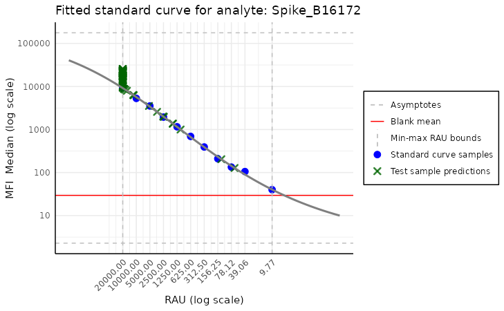
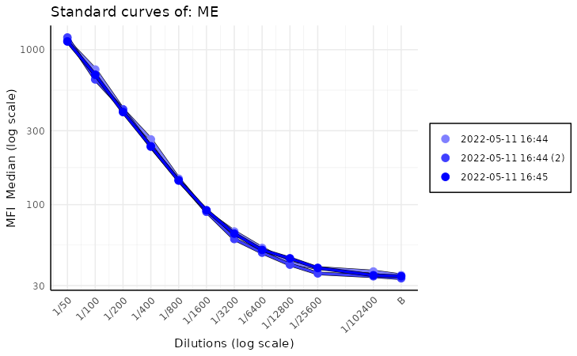
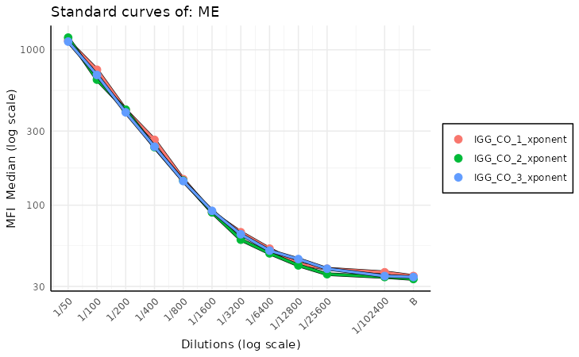
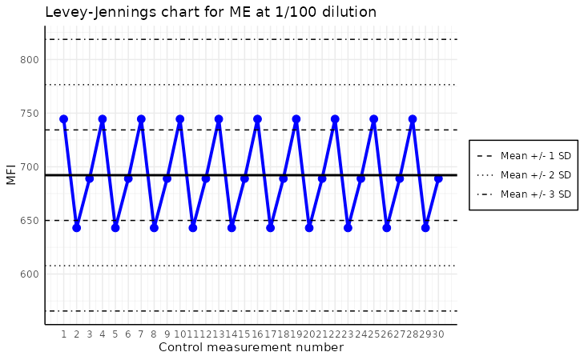

Introduction to plots created by our package
Mateusz Nizwantowski
2025-01-13
Source:vignettes/our_plots.Rmd
our_plots.RmdIntroduction
The PvSTATEM package provides a variety of plots that
can be used to visualize the Luminex data. In this vignette, we will
show how to use them. To present the package’s functionalities, we use a
sample dataset from the Covid OISE study, which is pre-loaded into the
package. Firstly, let us load the dataset as the plate
object.
library(PvSTATEM)
plate_filepath <- system.file("extdata", "CovidOISExPONTENT.csv", package = "PvSTATEM", mustWork = TRUE) # get the filepath of the csv dataset
layout_filepath <- system.file("extdata", "CovidOISExPONTENT_layout.xlsx", package = "PvSTATEM", mustWork = TRUE)
plate <- read_luminex_data(plate_filepath, layout_filepath) # read the data#> Reading Luminex data from: /home/runner/work/_temp/Library/PvSTATEM/extdata/CovidOISExPONTENT.csv
#> using format xPONENT
#>
#> New plate object has been created with name: CovidOISExPONTENT!
#>
plate#> Plate with 96 samples and 30 analytesPlate layout
We will omit some validation functionality in this vignette and focus
on the plots. After successfully loading the plate, we should validate
it by looking at some basic information using the summary function.
However, we can obtain similar information more visually using the
plot_layout function. It helps to quickly asses whether the
layout of the plate is correctly read from Luminex or the layout file.
The function takes the plate object as the argument.
plot_layout(plate)
The plot above shows the layout of the plate. The wells are coloured
according to the type of sample. If the user is familiar with the colour
scheme of this package, there is an option to turn off the legend. This
can be done by setting the show_legend parameter to
FALSE.
If the plot window is resized, it is recommended that the function be rerun to adjust the scaling of the plot. Sometimes, the whole layout may be shifted when a legend is plotted. To solve this issue, one has to stretch the window toward the layout shift, and everything will be adjusted automatically.
Counts for a given analyte
The plot_counts function allows us to visualize the
counts of the analyte in the plate. This plot is useful for quickly
spotting wells with a count that is too low to interpret results with
high confidence. The function takes the plate object and
the analyte name as the arguments. The function will return an error
message if there is a typo in the analyte name.
plot_counts(plate, "Spike_B16172")
The plot above shows the the analyte “OC43_NP_NA” counts in the
plate. The wells are coloured according to the count of the analyte.
Too-low values are marked with red, values on the edge of the threshold
are marked with yellow, and the rest are marked with green. There is an
option to show legend by setting the show_legend parameter
to TRUE. There is also an option to show the colours
without the counts by setting the show_counts parameter to
FALSE. This provides a cleaner plot without the counts.
plot_counts(plate, "FluA", plot_counts = FALSE)
Distribution of MFI values
The plot_mfi_distribution function allows us to
visualize the distribution of the MFI values for test samples for the
given analyte. And how they compare to standard curve samples on a given
plate. This plot is helpful to asses if the standard curve samples cover
the whole range of MFI of test samples. The function takes the
plate object and the analyte name as the arguments. The
function will return an error message if there is a typo in the analyte
name.
plot_mfi_for_analyte(plate, "Spike_B16172")
This plot shows the distribution of the MFI values for test samples
for the analyte “OC43_NP_NA”. The test samples are coloured in blue, and
the standard curve samples are coloured in red. The default plot type is
violin, but there is an option to change it to the boxplot by setting
the plot_type parameter to boxplot.
plot_mfi_for_analyte(plate, "FluA", plot_type = "boxplot")
Additionally, we can modify the scale of y-axis by setting the
scale_y to the desired transformation from ggplot2 package.
In case of boxplot type of plot, we may include the
outliers by the plot_outliers parameter.
plot_mfi_for_analyte(plate, "FluA", plot_type = "boxplot", scale_y = "identity", plot_outliers = TRUE)
Standard curve plots
Finally, we arrive at the most crucial visualization in our package -
the standard curve-related plots. Those plots help assess the quality of
the fit, which will be crucial to us in the next step of package
development. It comes in two flavors:
plot_standard_curve_analyte and
plot_standard_curve_analyte_with_model. The first does not
incorporate the model, while the second does.
Standard curve plot without model
This plot should be used to assess the quality of the assay. If anything goes wrong during the plate preparation, it should be visible easily in this plot.
plot_standard_curve_analyte(plate, "Spike_B16172")
Above, we see the default plot for the analyte “Spike_B16172”. We can
modify this plot by setting the parameters of the function. For example,
we can change the direction of the x-axis by setting
decreasing_rau_order parameter to FALSE. Other
parameters worth mentioning are log_scale, the default
value is c("all"), which means that both the x and y axes
are in the log scale. Other parameters worth mentioning are
log_scale, the default value of which is
c("all"), which means that both the x and y axes are on the
log scale. There is also an option to turn off some parts of the plot by
setting parameters plot_line, plot_blank_mean
and plot_rau_bounds to FALSE. The first
disables drawing the line between standard curve points, the second
turns off plotting the mean of blank samples, and the last disables
plotting the RAU value bounds.
Standard curve plot with model
This visualization is similar to the previous one but also incorporates the model. Thus, it carries more information at the cost of being more complex and crowded.
model <- create_standard_curve_model_analyte(plate, analyte_name = "Spike_B16172")
plot_standard_curve_analyte_with_model(plate, model)
Here, we do not have to specify the analyte name, as the model
already carries this information. The model is created by the
create_standard_curve_model_analyte function, which takes
the plate object and the analyte name as the arguments, but
this is not the focus of this vignette. The arguments of this function
are very similar to the previous one, except here there is a missing
plot_line argument, and there are two new arguments:
plot_asymptote and plot_test_predictions. The
first turns off the asymptotes, and the second disables plotting the
test samples’ predictions. By default, both are set to
TRUE.
Standard curve plot stacked
As another quality control measure, that detects either plates with
inconsistent results or deterioration of calibration in time we can use
the plot_standard_curve_stacked function. This function
plots all standard curves on the same plot for a given analyte, which
allows us to compare them easily. In order to run this function, we need
to provide the list_of_plates which is a list of plate
objects and the analyte name as the arguments.
dir_with_luminex_files <- system.file("extdata", "multiplate_reallife_reduced",
package = "PvSTATEM", mustWork = TRUE
)
list_of_plates <- process_dir(dir_with_luminex_files,
return_plates = TRUE, format = "xPONENT"
)#> Reading Luminex data from: /home/runner/work/_temp/Library/PvSTATEM/extdata/multiplate_reallife_reduced/IGG_CO_1_xponent.csv
#> using format xPONENT
#>
#> New plate object has been created with name: IGG_CO_1_xponent!
#>
#> Processing plate 'IGG_CO_1_xponent'
#> Fitting the models and predicting RAU for each analyte
#> Adding the raw MFI values to the output dataframe
#> Saving the computed RAU values to a CSV file located in: '/home/runner/work/_temp/Library/PvSTATEM/extdata/multiplate_reallife_reduced/IGG_CO_1_xponent_RAU.csv'
#> Computing nMFI values for each analyte
#> Adding the raw MFI values to the output dataframe
#> Saving the computed nMFI values to a CSV file located in: '/home/runner/work/_temp/Library/PvSTATEM/extdata/multiplate_reallife_reduced/IGG_CO_1_xponent_nMFI.csv'
#> Reading Luminex data from: /home/runner/work/_temp/Library/PvSTATEM/extdata/multiplate_reallife_reduced/IGG_CO_2_xponent.csv
#> using format xPONENT
#>
#> New plate object has been created with name: IGG_CO_2_xponent!
#>
#> Processing plate 'IGG_CO_2_xponent'
#> Fitting the models and predicting RAU for each analyte
#> Adding the raw MFI values to the output dataframe
#> Saving the computed RAU values to a CSV file located in: '/home/runner/work/_temp/Library/PvSTATEM/extdata/multiplate_reallife_reduced/IGG_CO_2_xponent_RAU.csv'
#> Computing nMFI values for each analyte
#> Adding the raw MFI values to the output dataframe
#> Saving the computed nMFI values to a CSV file located in: '/home/runner/work/_temp/Library/PvSTATEM/extdata/multiplate_reallife_reduced/IGG_CO_2_xponent_nMFI.csv'
#> Reading Luminex data from: /home/runner/work/_temp/Library/PvSTATEM/extdata/multiplate_reallife_reduced/IGG_CO_3_xponent.csv
#> using format xPONENT
#>
#> New plate object has been created with name: IGG_CO_3_xponent!
#>
#> Processing plate 'IGG_CO_3_xponent'
#> Fitting the models and predicting RAU for each analyte
#> Adding the raw MFI values to the output dataframe
#> Saving the computed RAU values to a CSV file located in: '/home/runner/work/_temp/Library/PvSTATEM/extdata/multiplate_reallife_reduced/IGG_CO_3_xponent_RAU.csv'
#> Computing nMFI values for each analyte
#> Adding the raw MFI values to the output dataframe
#> Saving the computed nMFI values to a CSV file located in: '/home/runner/work/_temp/Library/PvSTATEM/extdata/multiplate_reallife_reduced/IGG_CO_3_xponent_nMFI.csv'
plot_standard_curve_stacked(list_of_plates, "ME")
While we can pass to this function parameters found in other standard
curve plots, like log_scale,
decreasing_rau_order, data_type there is one
additional parameter that we want to focus on. Parameter is called
monochromatic and its default value is TRUE.
This results in a plots with a different shades of blue for each plate.
The more recent plates are darker while the older ones are almost white.
This helps quickly visualize drift in calibration of the equipment over
time.
When the monochromatic parameter is set to
FALSE, there is more variety in the colours of the plates,
which can be useful when comparing many plates. Each plate is more
distinct from the others, which can be helpful when looking for
outliers.
plot_standard_curve_stacked(list_of_plates, "ME", monochromatic = FALSE)
There is one more useful parameter in this function mainly
legend_type'. By default it is set toNULLwhich means that the legend type is determined based on themonochromaticvalue. Ifmonochromaticis equal toTRUEthen legend type is set todate, if it isFALSEthen legend type is set toplate_name. User can override this behavior by setting explicitlylegend_typetodateorplate_name`.
Levey-Jennings plot
The plot_levey_jennings function allows us to visualize
the Levey-Jennings plot for the given analyte. This plot is useful for
spotting trends in the data, such as shifts or drifts in the data. The
function takes the list_of_plates and the
analyte_name as the mandatory arguments. The
list_of_plates can be obtained by the
process_dir function, which reads the plates from the
directory, it is recommended way or creating list of plates.
list_of_plates <- rep(list_of_plates, 10) # since we have only 3 plates i will repeat them 10 times to show the plot
plot_levey_jennings(list_of_plates, "ME", dilution = "1/100", sd_lines = c(1, 2, 3))
The plot above shows the Levey-Jennings plot for the analyte “ME”
with the samples with dilution “1/100”. The default value
of dilution is “1/400”. The sd_lines parameter
allows us to set the distance of horizontal lines from the mean. For
example, sd_lines = c(1, 2) will plot four lines at +/-
1SD and +/- 2SD, where SD is the standard deviation of the
data. The default value of the sd_lines parameter is
c(1.96), which